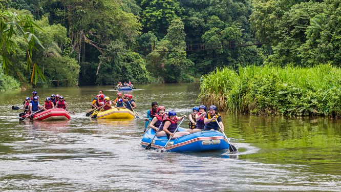
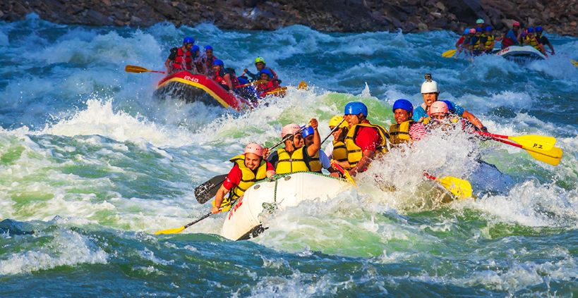

Want to kayak?
Want to raft?
Want to try something new and exciting?
Take a look at our most popluar trips:

Middle Flats Scenic Float Trip
Cost: $$ Ages: 4+ Rapids Class: I Skill Level: None
This family friendly relaxing adventure will take you on a blissful float through the Middle Flats.
There you enjoy the calm waters, sunshine, and beautiful scenery and possibly even get a glimpse of
the wildlife.
Rowing is all taken care of, so all you will have to do is sit back and enjoy!
Butterchurn Whitewater Trip
Cost: $$$ Ages: 8+ Rapids Class: II-III Skill Level: Beginner
Plan to get splashed! This is a great trip for those who want to try out the whitewater experience and have some fun!
Our friendly guides will show you paddling techniques and direct you as you run the rapids.
We want you to have a fantastic experience that will increase your love for the river and all that's
in it.


Upper Cascades Whitewater Trip
Cost: $$$ Ages: 14+ Rapids Class: II-III
Skill Level: Intermediate
You're about to get soaked!
The Upper Cascades are a bit rougher than the Butterchurn and is great for those with basic rafting
skills under their belt.
This trip is guaranteed to up your game and get your adrenaline going without going totally crazy.
... And here are even more adventures!
| Trip | Rapids class | Trip Cost | Group Capacity | Description | |
|---|---|---|---|---|---|
| Middle Flats Scenic Float | Ⅰ | $$ | 9 Total / no rowers | 🕒 2 hours 👤 Age: 4+ |
Experience: None Gentle waves for family friendly rafting |
| Butterchurn Whitewater Trip | Ⅱ-Ⅲ | $$$ | 8 Total / 6 are rowers | 🕒 3.5 hours 👤 Age: 8+ |
Experience: Beginner Choppy waves with occational twists Great for trying out the whitewater experience |
| Long River Combo Trip | Ⅰ-Ⅲ | $$$ | 16 Total / 8 are rowers | 🕒 5.5 hours 👤 Age: 8+ |
A combination trip of both Middle Flats and Butterchurn Your choice of small 8 person or large 16 person boats |
| Upper Cascades Whitewater Trip | Ⅱ-Ⅲ | $$$ | 8 Total / 6 are rowers | 🕒 4 hours 👤 Age: 14+ |
Choppy waves with some twists Best for Moderate to Intermediate skill levels |
| The Gorge Whitewater Trip | Ⅱ-Ⅳ | $$$$ | 8 Total / 6 are rowers | 🕒 3 days 👤 Age: 14+ |
This is a 3 day adventure Starts at Upper Cascades and ends below Butterchurn Includes The Gorge a set of level Ⅳ rapids Basic food and camping supplies are included *Contact us for more information |
| Private Tours | Ⅰ-Ⅳ | Contact Us | Various group sizes | Mutiple options | Small to large groups Tailored to group experience levels *Contact us for more personalized information |